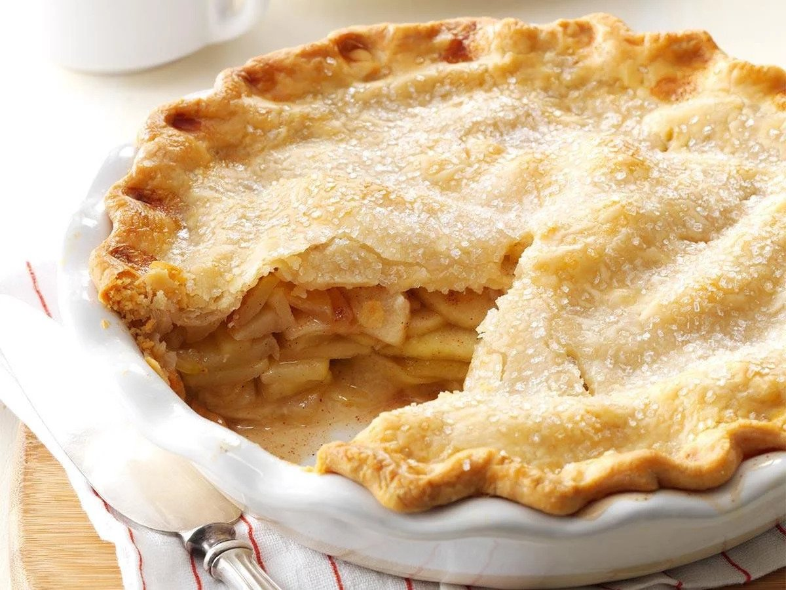

Apple pie
Total Time
Prep: 20 min.
Bake: 45 min.
Makes
8 servings
Nutrition Facts
1 piece:
- 414 calories,
- 16g fat (7g saturated fat),
- 14mg cholesterol,
- 227mg sodium,
- 67g carbohydrate (38g sugars, 2g fiber),
- 3g protein.

Ingredients
- 1/2 cup sugar
- 1/2 cup packed brown sugar
- 3 tablespoons all-purpose flour
- 1 teaspoon ground cinnamon
- 1/4 teaspoon ground ginger
- 1/4 teaspoon ground nutmeg
- 6 to 7 cups thinly sliced peeled tart apples
- 1 tablespoon lemon juice
- Pastry for double-crust pie (9 inches)
- 1 tablespoon butter
- 1 large egg white
- Additional sugar
Directions
-
- In a small bowl, combine the sugars, flour and spices; set aside.
- In a large bowl, toss apples with lemon juice.
- Add sugar mixture; toss to coat.
-
- Line a 9-in. pie plate with bottom crust; trim even with edge.
- Fill with apple mixture; dot with butter.
- Roll remaining crust to fit top of pie; place over filling.
- Trim, seal and flute edges.
- Cut slits in crust.
-
- Beat egg white until foamy; brush over crust.
- Sprinkle with sugar.
- Cover edges loosely with foil.
-
- Bake at 375° for 25 minutes.
- Remove foil and bake until crust is golden brown and filling is bubbly, 20-25 minutes longer.
- Cool on a wire rack.
(c) Taste of Home